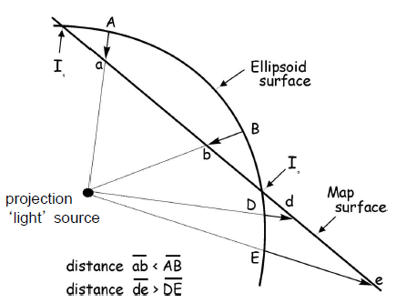

Projections
Projections are ways to visualization our three-dimensional Earth on a two-dimensional plane.
Key Concepts:
- Measuring the Earth:
- Elipsoid
- Geoid
- Datums
- Displaying the Earth
- General Coordinate Systems (i.e. Spherical and Cartesian)
- Projections and Distortion Properties
- Specific Coordinate Systems (i.e. UTM and State Plane)
Measuring the Earth
Definitions
- Geodesy: science of measuring the size and shape of the Earth
- Datum: a reference surface (i.e. set of known points) relative to an ellipsoid and a geoid
- a site datum: a reference height against which elevations are measured
- example: establish datum as a fixed elevation at the lowest point on the property, all heights are measured relative to the site (or local) datum
The Earth is not a perfect sphere, but better defined by a geoid (hypothetical shape of the Earth). The Earth’s shape can be properly defined by many ellipsoids, as it is flattened and roughly an ellipsoid in general.
- A geoid is an object represented by many ellipsoids.
- ellipsoids are mathematically defined
- geoids are not mathematically defined, but is a measured surface
- proper definition: a geoid is the measured surface perpendicular to a plumb line determined by the pull of gravity.
Several experiments, particularly the Gochi Rocket, have shown that gravity does in fact change over different areas of the Earth.
Surfaces
When creating the geoid, there are three surfaces to keep track of:
- the ellipsoid
- the geoid
- geoid undulation: height of the geoid relative to a given ellipsoid of reference
- the physical surface
Horitzontal Datum
Horizontal Datum: set of carefully surveyed reference points (surface) based on a given ellipsoid (approximating the geoid).
Process
- Define the shape of the Earth (ellipsoid)
- Use triangulation surveys to dfine the location of a set of known control points - for which the position on the ellipsoid is precisely known (geodetic datum)
- This is the reference surface and network agaisnt which all other points will be measured
Ellipsoid and Datum Summary
- Ellipsoids: mathematically defined by 2 radii
- Clarke 1866
- World Geodetic System of 1972 (WGS72)
- Geodetic Reference System 1980 (GRS80)
- World Geodetic System of 1984 (WGS84)
- Datum: reference points for establishing horizontal position
- NAD27 (uses Clarke 1866)
- NAD83 (uses GRS80)
- Geodetic Datum of Australia (uses GRS80)
- WGS84 “reference ellipsoid” (uses WGS84)
General Coordinate Systemes
Spatial referencing system to locate points on the Earth’s surface using pairs/triplets of numbers
- Spherical Coordinates: geographic / geodetic
- Coordinates that describe locations on a sphere
- Uses angles of rotation to define a directional vector
- Planar: cartesian
- Coordinates that describe locations within a two-dimensional Cartesian space (mostly right angles)
- rectangular grid with X and Y axes
- X: easting axis
- Y: northing axis
- each point is defined by an X, Y coordinate
Map Projection
A means of fitting features from the three-dimensional globe to a two-dimensional medium (i.e. map or computer screen), in reference to a datum.
- Necessary to display a spherical object on a flat surface
- Data from difference sources might fail to display if projections are not matching up
- Results in map distortions, which are projection errors
- Distortion properties cannot simultaneously be preserved in two-dimensions
- conformality (a continuous sequence of deposits, typical in parallel strata)
- distance
- direction
- area
- Distortion properties cannot simultaneously be preserved in two-dimensions
Distortion Properties
- Expansion: projection from ellipsoid surface is closer to light source than map surface
- Compression: projection from map surface is closer to light source than map surface

- conformality
- conformal map projections preserve local shape (meridians and parallels intersect at right angles)
- map scales the same everywhere and in any direction
- distance
- distances are true only from the center of the projection to any other place (equidistance) but not between these places
- direction
- great circle: shortest route between two points on a curved surface
- along the spherical equivalent of a straight line on a flat surface
- true-direction projections maintain these directions relative to center
- area
- equal area projections: all mapped areas have the same proportional relationship to the areas on the Earth that they represent
- shape, angle, and scale may be distorted
Families of Map Projections
Most common projections are based on developable surfaces, which are geometric shapes onto which Earth locations are projected. Imaging a light source in the center of a globe, there are three main categories:
- planar (plane/azimuthal): projected onto a flat surface
- cylindrical: cylinder wrapped around the globe
- conic: cone wrapped around the globe
Planar Projections
- Gnomonic: center
- Stereographic: antipode
- Orthographic: infinity
Common Map Projections
Lambert Conformal Conic
Transverse Mercator
Global UTM System (Universal Transverse Mercator Coordinate System)
- Each zone is 6 degrees wide
- Zone location defined by a central meridian
- North Origin (at the equator \(rightarrow\) Northing=0)
- South Origin (false northing of 10,000km)
- West (False Easting: 500,000km west of the zone’s central Meridian)
- Coordinates are always positive
- Coorindates discontinuous across zone boundaries
UTM Zones for US are 10-19 (West Coast to East Coast).
United States Plane Coordinate System (SPSC - State Plane Coordinate System)
- States Use Multiple Zones and Projections (some states use multiple within)
- Less distortion than UTM
- high accuracy
- projection distortions are roughly 4x better than UTM
- Issues: large metro areas can cover several counties and thus several state plane zones

Applying Projections to Zones
- Lambert Conformal Conic:
- distortion increases with distance from central meridian
- good for states with long North-South axis
- Mercator:
- distortion increases with distance from parallels
- good for states with long East-West axis